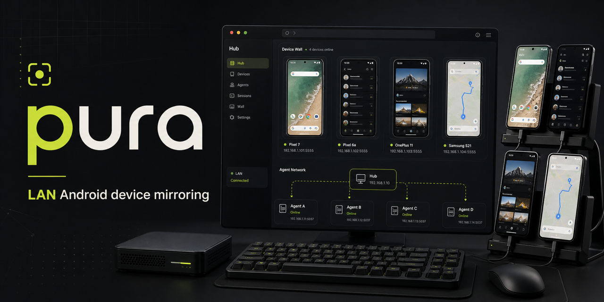

Run Hub
docker compose up -dLocal-first Android mirroring
pura turns developer-owned USB phones into a shared LAN device wall. ADB stays local; video and tap sessions route through the Hub.

Quickstart
A minimal path from scattered USB devices to a browsable Android wall.
docker compose up -dnpx @nickname4th/pura-cli connect <hub-lan-ip>:8787 --name "Zhang San"open http://<hub-lan-ip>:8787
# publish from the web UIHub / Agent architecture
The Hub owns discovery and session routing. Agents own physical devices, ADB, video capture, and local tap execution, then push control and video streams back to the Hub.
Deployment
The Hub runs as a containerized control plane. Agents stay native beside the hardware and initiate outbound connections.
docker compose up -d
open http://<hub-lan-ip>:8787PURA_IMAGE=ghcr.io/liutianjie/pura:main docker compose up -d
# /data stores screenshots and doc bindingsDATA_DIR=data-hub pura-cli hub --host 0.0.0.0 --port 8787npx launches a local Agent, stores Hub settings, and reports authorized ADB devices.
npx @nickname4th/pura-cli --helpThe Hub receives browser actions and sends them through the Agent's outbound control channel.
WS /ws/agents/:id/controlBind or choose one Docx document per device, then append saved screenshots with notes from the Hub UI.
PURA_FEATURE_LARK_DOCS=true
LARK_APP_ID=... LARK_APP_SECRET=...Traffic stays between Hub, Agents, and browsers on the local network. No cloud relay or public tunnel is part of the path.
ROLE=hub PORT=8787Open-source distribution
pura ships as the pura-cli package and a containerized Hub, with release
automation for tagged versions.